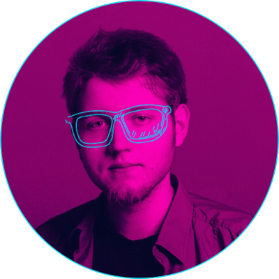
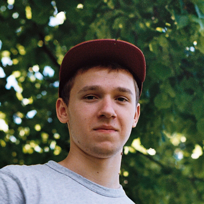

Eventos destacados
Estos son algunos de los principales eventos de los que podremos disfrutar el 8M en la casa dde Bernarda Alba

Ataulfo Pasiflora
Entrepieneur
Ataulfo es un apasionado de la web, la tecnología y las startup.
16:00h


Adeline Lace
UX & UI
Adeline es una apasionada del diseño y el UX.
17:00h

Clarissa Calceta
Ceo
Especialista en llevar a cabo todo lo que se propone.
18:00h

Paul Anka Derana
Developer
Paul desarrolla cuerpo y mente. Especialista en Apps y Abs.
19:00h